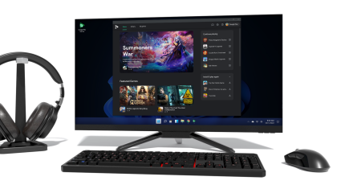

StaffAny, a management platform for SMEs with shift workers, has raised a $3.4 million Series A led by GGV Capital. The round included participation from East Ventures, FreakOut Shinsei Fund, Far E...
SaaS Labs has raised $42 million in a new financing round, less than three months after closing its previous funding, and acquired two startups as it looks to aggressively grow its automation platf...
Google today will begin rolling out a limited beta test of its newly announced Google Play Games for PC product in three overseas markets: Hong Kong, South Korea, and Taiwan. The Google Play Games ...
